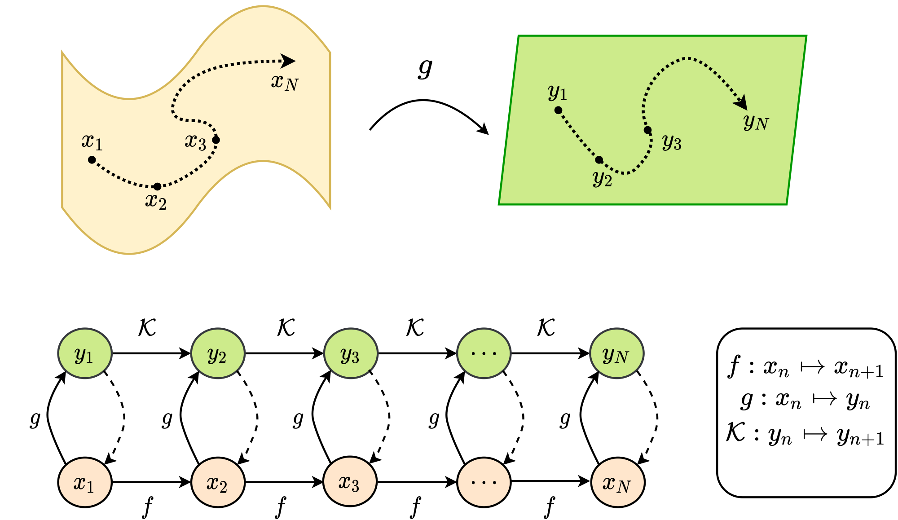
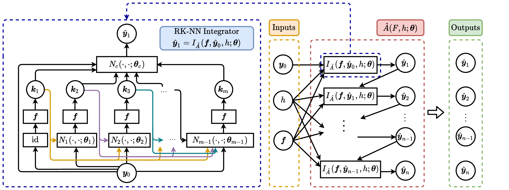
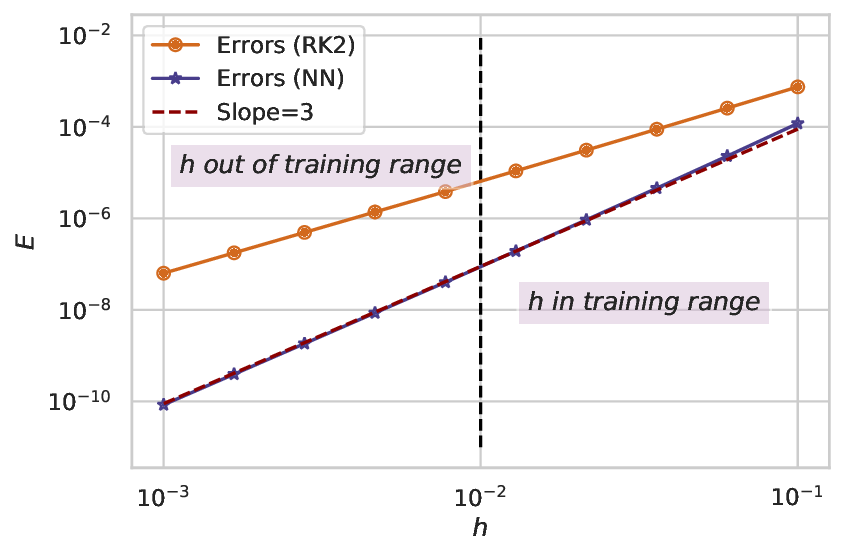

PhD Oral Defense · National University of Singapore · 2026
Machine Learning Augmented Simulation and Analysis of Dynamical Systems
Presenter: Guo Yue
Supervisor: Li Qianxiao
Department of Mathematics
What is a dynamical system?
A state that evolves in time — four everyday examples, all in motion:
molecule · molecular dynamics
oscillator · limit cycle
wave · transport
pendulum · with control
Dynamics = choosing a computable form
molecule
oscillator
wave
pendulum · control
All are states evolving in time
The equation
the evolution law \( \dot{\boldsymbol y}=\boldsymbol f(\boldsymbol y)\)
The representation
coordinates we track in
The scheme
step size & solver
Right form → the trajectory computes accurately, stably, cheaply;
Wrong form → it drifts or blows up.
Classically, every dial is set by hand
Each form built from first principles, with a theorem attached:
The equation
first principles \( m\ddot{\boldsymbol x}=-\nabla V\)
exact · interpretable
The representation
human insight normal modes
decoupled
The scheme
hand-designed Euler · RK · symplectic
order \(p\) · stable
Strict and guaranteed: hand-derivable,unknown, or too expensive.
When the form is not easily hand-writable, we learn it
Only data align with trajectories
we watch the system move but the equation is unknown
Computation costs too much
each force is a quantum-scale calculation (molecular dynamics)
Learning replaces a hand-designed form with one parameterized flexibly and fit from data.
Bring that power into scientific computing,
without giving up the classical guarantees → so which dial do we learn? →
Thesis viewpoint: learn the structured components
Part I · Learning representations
Parametric Koopman Decompositions
Published as“Learning Parametric Koopman Decompositions for Prediction and Control”
in SIAM Journal on Applied Dynamical Systems (2025)
Yue Guo, Milan Korda, Ioannis G. Kevrekidis, Qianxiao Li
Motivation · Learning representations
Make a nonlinear system look linearPK-NN
our system: nonlinear, from data
learn a representation
if the system were linear
spectral analysis
forecast / prediction
convex optimal control
stability guarantees
Linear systems come with this whole toolbox but only if the system is linear.
Driving question: can we learn a representation in which a nonlinear system becomes linear?
The problem: data-driven prediction & control
We have only trajectory data from an unknown transition map
\( \boldsymbol x_{n+1}=\boldsymbol f(\boldsymbol x_n,\boldsymbol u_n) \) — state \(\boldsymbol x\in X\),
parameter / control \(\boldsymbol u\in U\). Two problems are posed on \(\boldsymbol f\):
Optimal control Data: \(\{\boldsymbol x_n,\boldsymbol u_n, \boldsymbol x_{n+1}\}\) Goal: given \(\boldsymbol x_0\) and a cost, find \(\{\boldsymbol u_n\}\) minimizing it.
Two obstacles for data-driven modelling: non-linearity & high dimensionality.
Koopman: a finite, linear invariant subspace
Track observables \(g(\boldsymbol x)\) instead of the state. The Koopman operator \(\mathcal K\) advances any observable linearly:
\(g(\boldsymbol x_{n+1})=(\mathcal K g)(\boldsymbol x_n)\).
We keep only a chosen dictionary \(\boldsymbol\Psi=(\psi_1,\dots,\psi_m)\) spanning a finite invariant subspace \(S\): \(\mathcal K\,S\subset S\).
On \(S\), \(\mathcal K\) becomes a finite matrix \(K\) (basis \(\boldsymbol\Psi\)) — the Koopman decomposition:
\[ \boldsymbol\Psi(\boldsymbol x_{n+1})=K\,\boldsymbol\Psi(\boldsymbol x_n) \]
finite-dim non-linear → infinite-dim linear; DL handles high dimensions.

Nonlinear state space → flat observable space, where \(\mathcal K\) is linear.
The Koopman operator is always linear, but its invariant observable space is generally
infinite-dimensional.
Finite-dimensional Koopman models are therefore often approximations, not exact closures.
PK-NN: learn \(\boldsymbol\Psi\) and \(K(\boldsymbol u)\) jointly
For parametric systems \(\mathcal K\) depends on \(\boldsymbol u\), PK-NN learns one shared dictionary \(\boldsymbol\Psi\) and a fully nonlinear operator \(K(\boldsymbol u)\).
The model reads \(\hat r_n=\boldsymbol c^\top\boldsymbol\Psi(\boldsymbol x_n)\) linearly off the lifted state \(\boldsymbol\Psi_{n+1}=K(\boldsymbol u_n)\boldsymbol\Psi_n\).
Part II · Learning the numerical mechanism
Personalized ODE Integrators
Published as“Personalized Algorithm Generation: A Case Study in Learning ODE Integrators”
in SIAM Journal on Scientific Computing (2022)
Yue Guo, Felix Dietrich, Tom Bertalan, Danimir T. Doncevic, Manuel Dahmen, Ioannis G. Kevrekidis, Qianxiao Li
Motivation · Learning the numerical mechanism
An integrator built for Specific system RK-NN
Classical Solver: one recipe for all f
A worst-case tax: robust to systems you never solve
Specific family: solved many times
Worst-case coefficients are never tuned to it, you pay that tax on every run
Driving question: can we build (learn) an integrator specialized to the family we actually solve?
Learning the numerical mechanism · known dynamics
Personalized ODE integrators RK-NN
Known ODE \(\dot{\boldsymbol y}=\boldsymbol f(\boldsymbol y)\). A numerical integrator \(I\) advances the state one step \(h\): \(\boldsymbol y_n\to\boldsymbol y_{n+1}\).
One step, using the known \(\boldsymbol f\).
How should we optimize the integrator \(I\)?
Classical: \(I\) tuned for the worst case over a large class \(\mathcal F\):
Matched through \(h^3\): the step differs only by the truncation error \(\hat{\boldsymbol y}_{n+1}-\boldsymbol y_{n+1}=O(h^4)\).
RK-NN: learn the coefficients \(\boldsymbol\theta\)

The Butcher-tableau coefficients become learnable \(\boldsymbol\theta\) inside an \(m\)-stage RK.
Data: sample the family \(F_\mu\), initial states \(\boldsymbol y_0\), and steps \(h\in(0.01,0.1)\); the target \(\boldsymbol y_1=\varphi_h(\boldsymbol y_0)\) is the accurate one-step solution of the known \(\boldsymbol f\).
\(\mathcal L\): one-step error, scaled by the classical RK error \(\|\boldsymbol y_1-\hat{\boldsymbol y}_1^{(\mathrm{RK})}\|\) \(\mathcal R\): Taylor regularizer enforcing order \(\alpha\).
RK-NN keeps order 3 yet beats RK3
Two real 2-D nonlinear systems, state \(\boldsymbol y=(u,v)\). A 3-stage RK-NN (\(\alpha=3\)) is trained per family over \(h\in(0.01,0.1)\); outside that range it degrades — specialized by design.
Van der Pol
\[ \dot u = v,\qquad \dot v = \mu\,(1-u^{2})\,v - u \]
limit cycle; nonlinearity set by \(\mu\).
Brusselator
\[ \dot u = A + u^{2}v - (B{+}1)u,\qquad \dot v = B u - u^{2}v \]
autocatalytic reaction with constants \(A,B\).
\(h^3:\ {\color{#b5546a}\theta_{c2}\theta_1^2{=}1}\) (solvable); with \(\theta_{c2}\theta_1{=}\tfrac12\Rightarrow \theta_1{=}2,\ \theta_{c2}{=}\tfrac14,\ \theta_{c1}{=}\tfrac34\).

2-stage RK-NN attains slope-3 error.
Part III · Learning the continuous description
Integrator-aware Learning
Manuscript“Integrator-aware Learning of Modified Equations”
in process
Yue Guo, Aiqing Zhu, Haotian Jiang, Qianxiao Li.
Motivation · Learning the continuous description
Cheap forces, but tiny steps ModEqLearn
ethanol
naphthalene
aspirin
ML potentials make the force per step cheap
Molecular motion needs a tiny \(\Delta t\) (fs), so a long run takes lots of steps.
Take a larger \(\Delta t\) to go faster, and per-step error accumulates over the trajectory.
Driving question: can we learn forces accurate at a larger \(\Delta t\)?
Key idea ①: Duality with learning the integrator
Last Project
Given a system, learn the integrator\[ \min_{\Phi}\ \text{err}\big(\Phi_h,\ \varphi_{h,\boldsymbol f_{\text{true}}}\big) \]
Current Project
Given an integrator, learn the equation\[ \min_{\boldsymbol f_\theta}\ \text{err}\big(\Phi_{h,\boldsymbol f_\theta},\ \varphi_{h,\boldsymbol f_{\text{true}}}\big) \]
Key idea ②: modified equations
Backward error analysis: a numerical integrator exactly solves a modified differential equation whose field depends on the integrator and the step size \(h\).
Inverse modified equation: Given the true field \(\boldsymbol f_{true}\) we want the discrete map to reproduce, find the field \(\boldsymbol f_\theta\) to feed the integrator so that its numerical flow exactly matches the true flow.